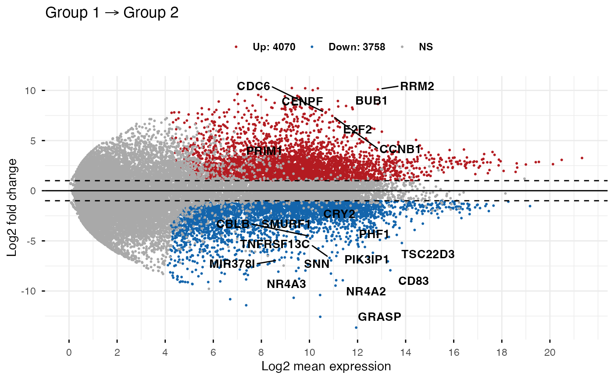
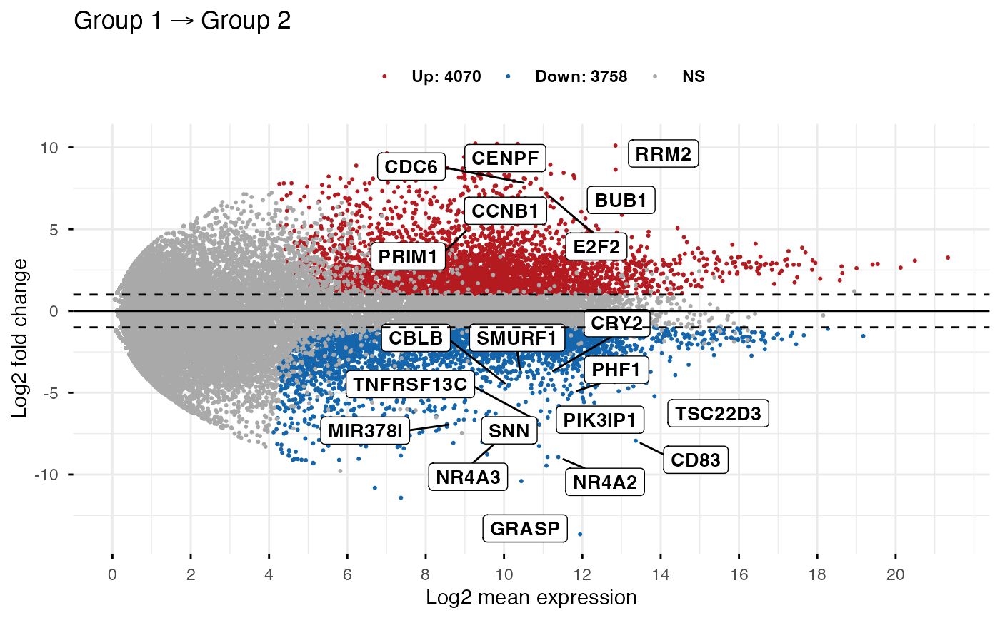

Differential gene expression analysis results obtained from comparing the RNAseq data of two different cell populations using DESeq2
Usage
data("diff_express")Format
A data frame with 36028 rows and 5 columns.
namegene names
baseMeanmean expression signal across all samples
log2FoldChangelog2 fold change
padjAdjusted p-value
detection_calla numeric vector specifying whether the genes is expressed (value = 1) or not (value = 0).
Examples
data(diff_express)
# Default plot
ggmaplot(diff_express,
main = expression("Group 1" %->% "Group 2"),
fdr = 0.05, fc = 2, size = 0.4,
palette = c("#B31B21", "#1465AC", "darkgray"),
genenames = as.vector(diff_express$name),
legend = "top", top = 20,
font.label = c("bold", 11),
font.legend = "bold",
font.main = "bold",
ggtheme = ggplot2::theme_minimal()
)

# Add rectangle around labesl
ggmaplot(diff_express,
main = expression("Group 1" %->% "Group 2"),
fdr = 0.05, fc = 2, size = 0.4,
palette = c("#B31B21", "#1465AC", "darkgray"),
genenames = as.vector(diff_express$name),
legend = "top", top = 20,
font.label = c("bold", 11), label.rectangle = TRUE,
font.legend = "bold",
font.main = "bold",
ggtheme = ggplot2::theme_minimal()
)
